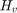

pvl_calcPwat
Calculates precipitable water (cm) from ambient air temperature (C) and relatively humidity (%).
Contents
Syntax
- Pwat = pvl_calcPwat(T,RH)
Description
Calculates precipitable water (cm) from ambient air temperature (C) and relatively humidity (%) using an empirical model [1]. The model was developed by expanding Eq. 1 in [2]:
using Eq. 2 in [2]
 is the apparant water vapor scale height (km). The expression for is Eq. 4 in [2]:
is the surface water vapor density (g/m^3). In the expression , is the saturation water vapor pressure (millibar). The expression for is Eq. 1 in [3]
Inputs
- T - ambient air temperature at the surface (C)
- RH - relative humidity at the surface (%)
Output
- Pwat - precipitable water (cm)
Example
[Pwat] = pvl_calcPwat(25,70) %Pressure at STC temperature and RH of 70%
Pwat =
3.5090
Reference:
[1] W. M. Keogh and A. W. Blakers, Accurate Measurement, Using Natural Sunlight, of Silicon Solar Cells, Prog. in Photovoltaics: Res. and Appl. 2004, vol 12, pp. 1-19 (doi: 10.1002/pip.517).
% [2] C. Gueymard, Analysis of Monthly Average Atmospheric Precipitable % Water and Turbidity in Canada and Northern United States, % Solar Energy vol 53(1), pp. 57-71, 1994. % (doi:10.1016/S0038-092X(94)90606-8). % [3] C. Gueymard, Assessment of the Accuracy and Computing Speed of % simplified saturation vapor equations using a new reference % dataset, J. of Applied Meteorology 1993, vol. 32(7), pp. % 1294-1300 (doi: % 10.1175/1520-0450(1993)032<1294:AOTAAC>2.0.CO;2).
Copyright 2015 Sandia National Laboratories